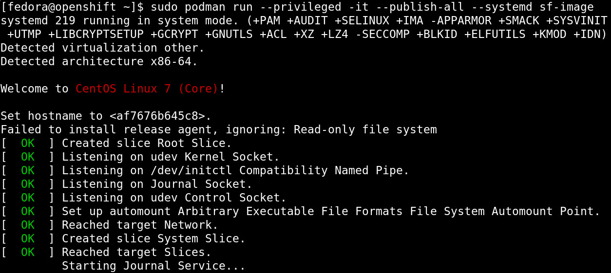

This article explains how to run Software Factory in a container with Buildah and Podman.
Containerize Software Factory
We are planning on supporting Software Factory deployment on OKD in the future, however, we are waiting for a proper cloud-native Zuul service to mitigate the executor root privilege requirements discussed in this thread.
This article is about containerizing the current Software Factory architecture as-is:
- Using the sfconfig Ansible playbook to install and configure the services,
- Managing the services with systemd, and
- Deploying all in one container.
Our goal is to enable the user to quickly prototype and easily deploy the services on a personal computer.
Building The Image With Buildah
Buildah is a tool that facilitates building Open Container Initiative (OCI) compliant images. Here is the bulk of the image building process:
#!/bin/bash -e
container=$(buildah from centos:latest)
mountpath=$(buildah mount $container)
trap "set +e; buildah umount $container; buildah delete $container" EXIT
# Install sfconfig
buildah run $container -- yum install -y \
https://softwarefactory-project.io/repos/sf-release-master.rpm
buildah run $container -- yum install -y sf-config
# Run the install playbook
buildah run $container -- sfconfig --skip-setup
# Test that zuul is installed
buildah run $container -- scl enable rh-python35 -- zuul --version
# -> Zuul version: 3.3.1-1.el7
# Tag the image
buildah config --created-by "Software Factory" $container
buildah config --author "release@softwarefactory-project.io" $container
buildah commit $container sf-image
The main advantage of this method is its flexibility. The final commit command creates a single layer and the mountpath variable enables direct access to the image content. Iterating quickly to fix the few issues found when using sf-config inside a container image (such as fixing SELinux configuration which is not authorized in a container) has been invaluable.
Here are some useful buildah commands:
- List the containers used: buildah containers
- Cleanup stalled build: buildah delete --all
- Cleanup images: buildah rmi -a
We now have an OCI image with all the Software Factory package installed but they are not configured yet.
Starting Systemd Inside A Container
The recommended strategy is to run one service per container. However, this requires an orchestration engine and adds some networking and storage complexicity.
To keep things as simple as possible, we are going to start systemd inside the container.
First we create a new minimal systemd target without multi-user services such as agetty:
# /etc/systemd/system/default.target
[Unit]
Description=Software Factory boot target
Requires=basic.target network.target network-online.target
Wants=sfconfig.service
After=basic.target
Then we create a new sfconfig service to trigger the configuration playbook:
# /lib/systemd/system/sfconfig.service
[Unit]
Description=sfconfig configuration script
Requires=dbus.service sshd.service
[Service]
Type=simple
ExecStart=/usr/libexec/software-factory/sfinit
TimeoutSec=0
StandardOutput=tty
StandardError=tty
StandardInput=tty
TTYPath=/dev/pts/0
TTYReset=yes
TTYVHangup=yes
And finally we create a sfinit script to manage the services configuration and execute a journalctl process so that services logs are forwarded to the container logs:
#!/bin/bash -i
# prettify env
export HOME=/root
export TERM=xterm
source /etc/profile
# fix hostname (hostnamectl doesn't work in podman)
hostname managesf.sfpodman.local
sed -e 's/sftests.com/sfpodman.local/' -i /etc/software-factory/sfconfig.yaml
cat <<EOF> /etc/software-factory/custom-vars.yaml
provision_demo: true
gateway_force_ssl_redirection: false
EOF
# enable exec in /tmp (TODO: figure out what set it to noexec...)
mount -o remount,exec /tmp
# setup services
sfconfig --skip-install
journalctl -f &
exec bash
The above file needs to be added inside the mountpath and sfinit needs to be marked executable. We can now finalize the image creation:
# Run these before the commit command
buildah config --cmd /sbin/init $container
builadh config --port 80 $container
builadh config --port 443 $container
builadh config --port 29418 $container
And test it using this command:
Running The Image With Podman
Podman is a container runtime that does not implement a big fat daemon like the Docker Engine. The advantage of the Podman model is that cgroups or security constraints still control the container processes.
To start software factory:
$ podman run --privileged --interactive --tty --publish-all
--systemd --name my-sf sf-image
[...]
PLAY RECAP ********************************************************************
managesf.sfpodman.local : ok=528 changed=252 unreachable=0 failed=0
Friday 04 January 2019 10:15:29 +0000 (0:00:00.071) 0:03:07.513 ********
===============================================================================
sf-mysql : Start mariadb ----------------------------------------------- 12.13s
sf-gerrit : Start service ----------------------------------------------- 9.37s
sf-gerrit : Reload gerrit service --------------------------------------- 8.70s
sf-gerrit : restart gerrit ---------------------------------------------- 8.64s
sf-gateway : Update dashboards ------------------------------------------ 6.14s
sf-zuul : Get service configuration via managesf/configurations --------- 5.98s
sf-repos : Check if repository exists ----------------------------------- 5.16s
sf-repos : Check if repository exists ----------------------------------- 5.12s
sf-zuul : Generate tenant-update secrets -------------------------------- 5.03s
sf-repos : Check if repository exists ----------------------------------- 3.92s
sf-repos : Create initial resources ------------------------------------- 3.88s
sf-gerrit : Reindex gerrit when service is not running ------------------ 3.86s
sf-gerrit : Initialize/Upgrade gerrit when service is not running ------- 3.73s
sf-repos : Provision demo resources in config repo ---------------------- 2.78s
sf-zuul : Wait for gearman server --------------------------------------- 2.09s
sf-zuul : Manually create database to avoid concurrency issue ----------- 1.98s
sf-postfix : Generate virtual database ---------------------------------- 1.90s
sf-monit : restart monit ------------------------------------------------ 1.86s
sf-monit : restart monit ------------------------------------------------ 1.82s
sf-repos : Make a first admin connexion through SF SSO ------------------ 1.64s
sfpodman.local: SUCCESS
Access dashboard: https://sfpodman.local
Login with admin user, get the admin password by running:
awk '/admin_password/ {print $2}' /etc/software-factory/sfconfig.yaml
- The --privileged flag is required for the zuul-executor services.
- The --interactive and --tty (or simply -ti) flags keep the process in the foreground.
- The --publish-all flag creates the network port mapping.
- The --systemd flag take cares of special configurations needed by the systemd init command.
- And the --name flag is to name the container for easy reference.
After the configuration is completed, you can set the ip address of the instance to sfpodman.local in your /etc/hosts file and use this command to get the port mapping:
$ podman port my-sf
443/tcp -> 0.0.0.0:33251
80/tcp -> 0.0.0.0:38087
29418/tcp -> 0.0.0.0:36167
After using the services, you can save the state to restart the container with your change using:
$ podman commit my-sf my-sf-image
// Then use my-sf-image instead of sf-image
Finally you can publish the image to a remote registry using:
$ podman login docker.io
$ podman push sf-image docker://docker.io/my-org/sf-image
Here are some other useful podman commands:
- List available images: podman images
- List processes: podman ps -a
- Kill all the containers: podman rm -af
- Cleanup images: podman rmi -a
Conclusion
Using Podman and Buildah, we can build a Software Factory container image that is surprisingly small, less than 500 MB and fast to deploy, about: 5 minutes. Check it for yourself using this single command:
$ podman run --privileged --interactive --tty --publish-all --systemd softwarefactoryproject/sf-minimal:latest
Similarly, we can also build the other Software Factory architectures, for example the sf-zuul-minimal which doesn't have the gerrit service and the sf-allinone which features all the supported services such as InfluxDB, Grafana, ELK, lodgeit, etherpad, mumble, code-search, repoxplorer and storyboard:
$ podman run --privileged --interactive --tty --publish-all --systemd softwarefactoryproject/sf-allinone:latest
It is worthy to mention that Podman, Buildah and other tools like Skopeo or CRI-O re-use common data libraries that support multiple independent processes to interact with at the same time: containers/storage and containers/image.
Altogether, this new toolchain offers an efficient method to work with open containers without the hassle of frequent docker issues.
Moreover, the maintainers are very re-active: when working on this story, I encountered a bug with the commit command which got promptly fixed in less that 4 hours.